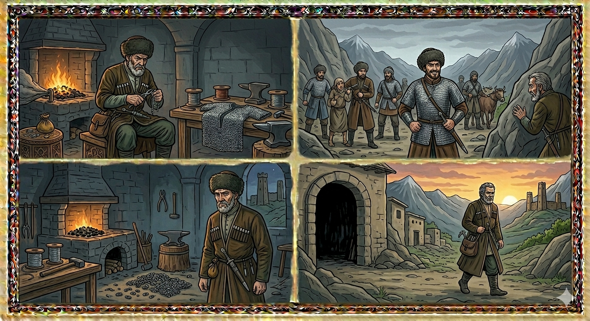

И.А. Дахкильгов. Хьехаме дувцарш - поучительные рассказы-притчи.
И.А. Дахкильгов. Хьехаме дувцарш - поучительные рассказы-притчи. Из ингушского фольклора.

Кхы гӀагӀаш дергдац аз
Маьрше яхаш къонах хиннав Нелх яхача гӀалашка вахаш. Говза пхьар хиннав из. Цу хана паччахьа Сибаре хиннавар вахаш, хӀаьта гӀалгӀаша ГуржегӀара говрашца а бӀарзашца а хьалкхухьар кӀада а, аьшка а, кхыдар а. ГуржегӀара аьшка кхихьад Маьрше. Цу аьшкех саьргаш а деш, цу саьргех гӀагӀаш деш хиннав из. Уж сов дика хиларах, гӀалгӀаша шоаш ийдарал совгӀа, нохчашкара а пхешкара а нах ихаб уж ийде. Дика мах а хулаш, хьал дика хиннад Маьрше. Цкъа дагадехад цунна: "ВанагӀа, са гӀагӀаш ийдеча наха фу леладу-те царех, хьажа веза со". Шийгара массехка гӀагӀа а ийца, дӀаболабенача наха тӀехьавахав Маьрше. Царна бӀарга цагуш тӀехь водаш хиннав из. Цхьаннахьара миска саг есар вугаш, кхычахьа дезал бовхаш бӀаргадейнад цунна. ХӀаьта цу моастагӀашта хьатеха хӀама ше даьча гӀагӀаех ца латалга а дайнад цунна. - Са гӀагӀаш царга хилар бахьан долаш селлара майрабаьнна а зуламаш деш а хьувз уж нах. Кхы гӀагӀаш дергдац аз! - из соцам а баь, кхы гӀагӀаш даьдац Маьрше.
РУССКИЙ
Не буду больше никогда делать кольчуги
В ауле Нелх жил человек по имени Мярше. Был он прославленным кузнецом. В то время мы еще не были под властью русского царя. Наши предки покупали в Грузии ткани, железо и прочие вещи. Мярше возил оттуда железо, вытягивал его в проволоку, затем свивал ее в кольца. Из них он делал кольчуги. Они были настолько добротные, что их покупали и другие кавказские народы. Плата за кольчуги была высокой, и Мярше жил в достатке. Как-то ему пришло на ум: "Покупают у меня кольчуги, а вот что они с ними делают? Надо мне прознать это". Как-то купили у него несколько кольчуг. Прячась, он проследил за теми, которые из купили. Они оказались разбойниками. Увидел Мярше, что где-то пленили человека, где-то ограбили людей. А если завязывалось сражение, то насильников надежно защищали сделанные им кольчуги. "Теперь мне ясно, что людям несут мои кольчуги. Благодаря им, зная, что неуязвимы, насильники храбры. Поэтому они чинят злые дела и притесняют мирных людей. Отныне я не буду делать кольчуги", - решил Мярше и слово свое сдержал.
ENGLISH
I shall never make chain mail again
In the village of Nelkh lived a man called Myarshe. He was a renowned blacksmith. At that time, we were not yet under the rule of the Russian tsar. Our ancestors used to buy fabrics, iron and other goods in Georgia. Myarshe would bring iron back from there, draw it into wire, and then twist it into rings. From these, he made chain mail. It was of such high quality that other Caucasian peoples bought it too. The price for the chain mail was high, and Myarshe lived in comfort. One day it occurred to him: 'People buy chain mail from me, but what do they actually do with it? I must find out.' On one occasion, several suits of chainmail were bought from him. Hiding, he followed those who had bought them. They turned out to be bandits. Myarshe saw that in some places they had taken people captive, and in others they had robbed people. And whenever a fight broke out, the bandits were reliably protected by the chainmail he had made. "Now I realise what my chainmail is doing to people. Thanks to it, knowing they are invulnerable, the robbers are bold. That is why they commit evil deeds and oppress peaceful people. From now on, I will not make any more chainmail," decided Myarshe, and he kept his word.
НОХЧИЙН
ПОГОВОРКИ